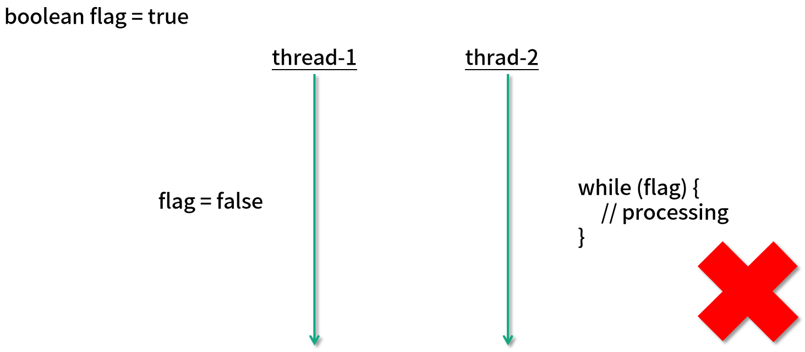
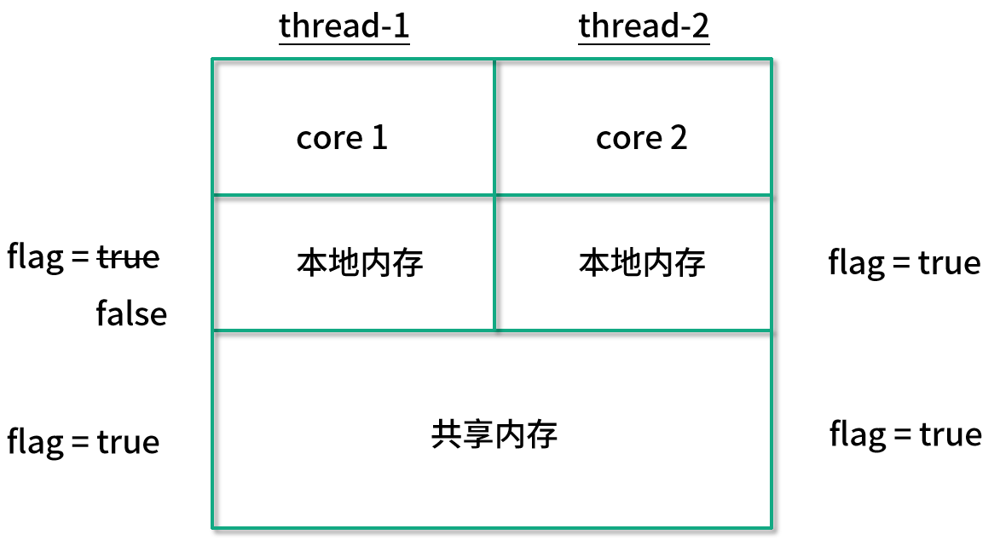
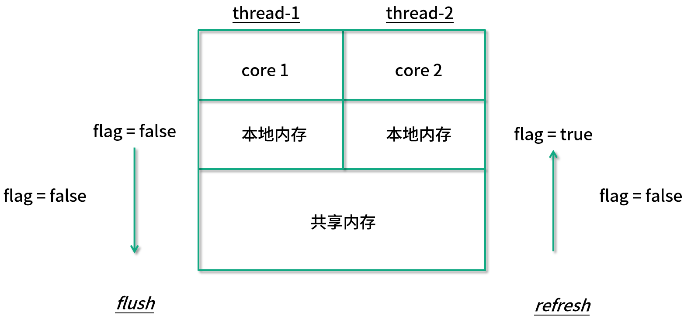
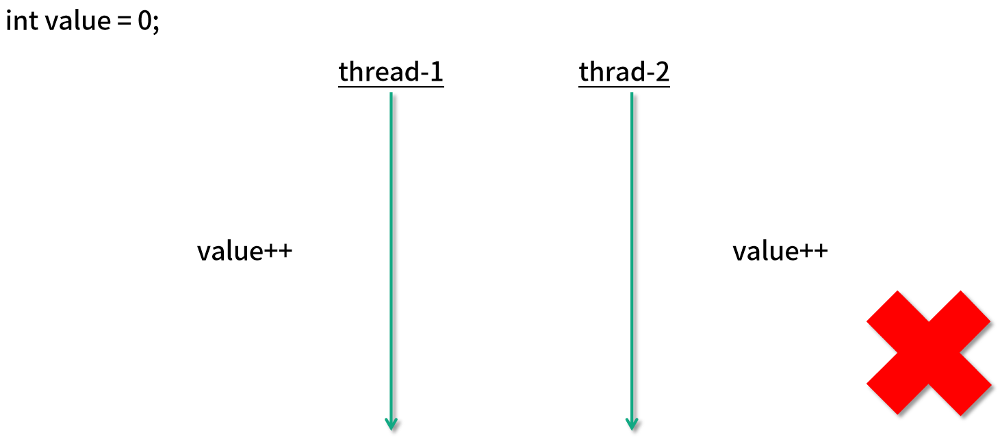
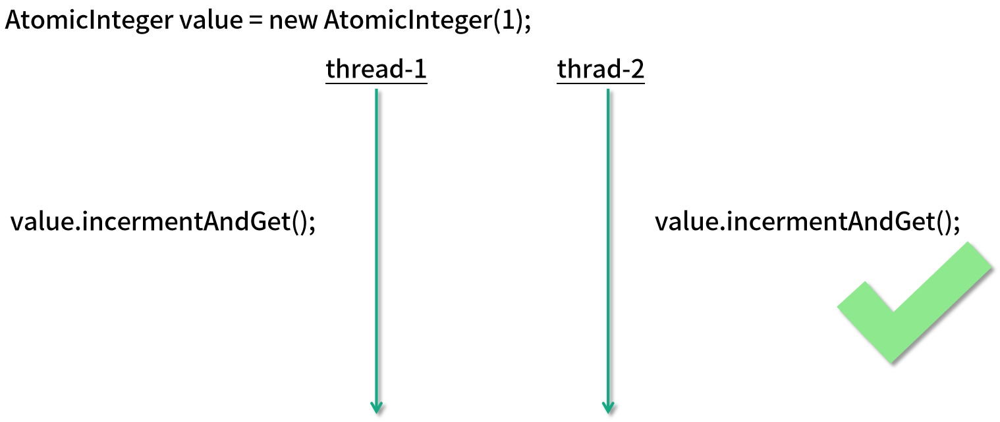

- 00 由点及面，搭建你的 Java 并发知识网.md
- 01 为何说只有 1 种实现线程的方法？.md
- 02 如何正确停止线程？为什么 volatile 标记位的停止方法是错误的？.md
- 03 线程是如何在 6 种状态之间转换的？.md
- 04 waitnotifynotifyAll 方法的使用注意事项？.md
- 05 有哪几种实现生产者消费者模式的方法？.md
- 06 一共有哪 3 类线程安全问题？.md
- 07 哪些场景需要额外注意线程安全问题？.md
- 08 为什么多线程会带来性能问题？.md
- 09 使用线程池比手动创建线程好在哪里？.md
- 10 线程池的各个参数的含义？.md
- 11 线程池有哪 4 种拒绝策略？.md
- 12 有哪 6 种常见的线程池？什么是 Java8 的 ForkJoinPool？.md
- 13 线程池常用的阻塞队列有哪些？.md
- 14 为什么不应该自动创建线程池？.md
- 15 合适的线程数量是多少？CPU 核心数和线程数的关系？.md
- 16 如何根据实际需要，定制自己的线程池？.md
- 17 如何正确关闭线程池？shutdown 和 shutdownNow 的区别？.md
- 18 线程池实现“线程复用”的原理？.md
- 19 你知道哪几种锁？分别有什么特点？.md
- 20 悲观锁和乐观锁的本质是什么？.md
- 21 如何看到 synchronized 背后的“monitor 锁”？.md
- 22 synchronized 和 Lock 孰优孰劣，如何选择？.md
- 23 Lock 有哪几个常用方法？分别有什么用？.md
- 24 讲一讲公平锁和非公平锁，为什么要“非公平”？.md
- 25 读写锁 ReadWriteLock 获取锁有哪些规则？.md
- 26 读锁应该插队吗？什么是读写锁的升降级？.md
- 27 什么是自旋锁？自旋的好处和后果是什么呢？.md
- 28 JVM 对锁进行了哪些优化？.md
- 29 HashMap 为什么是线程不安全的？.md
- 30 ConcurrentHashMap 在 Java7 和 8 有何不同？.md
- 31 为什么 Map 桶中超过 8 个才转为红黑树？.md
- 32 同样是线程安全，ConcurrentHashMap 和 Hashtable 的区别.md
- 33 CopyOnWriteArrayList 有什么特点？.md
- 34 什么是阻塞队列？.md
- 35 阻塞队列包含哪些常用的方法？add、offer、put 等方法的区别？.md
- 36 有哪几种常见的阻塞队列？.md
- 37 阻塞和非阻塞队列的并发安全原理是什么？.md
- 38 如何选择适合自己的阻塞队列？.md
- 39 原子类是如何利用 CAS 保证线程安全的？.md
- 40 AtomicInteger 在高并发下性能不好，如何解决？为什么？.md
- 41 原子类和 volatile 有什么异同？.md
- 42 AtomicInteger 和 synchronized 的异同点？.md
- 43 Java 8 中 Adder 和 Accumulator 有什么区别？.md
- 44 ThreadLocal 适合用在哪些实际生产的场景中？.md
- 45 ThreadLocal 是用来解决共享资源的多线程访问的问题吗？.md
- 46 多个 ThreadLocal 在 Thread 中的 threadlocals 里是怎么存储的？.md
- 47 内存泄漏——为何每次用完 ThreadLocal 都要调用 remove()？.md
- 48 Callable 和 Runnable 的不同？.md
- 49 Future 的主要功能是什么？.md
- 50 使用 Future 有哪些注意点？Future 产生新的线程了吗？.md
- 51 如何利用 CompletableFuture 实现“旅游平台”问题？.md
- 52 信号量能被 FixedThreadPool 替代吗？.md
- 53 CountDownLatch 是如何安排线程执行顺序的？.md
- 54 CyclicBarrier 和 CountdownLatch 有什么异同？.md
- 55 Condition、object.wait() 和 notify() 的关系？.md
- 56 讲一讲什么是 Java 内存模型？.md
- 57 什么是指令重排序？为什么要重排序？.md
- 58 Java 中的原子操作有哪些注意事项？.md
- 59 什么是“内存可见性”问题？.md
- 60 主内存和工作内存的关系？.md
- 61 什么是 happens-before 规则？.md
- 62 volatile 的作用是什么？与 synchronized 有什么异同？.md
- 63 单例模式的双重检查锁模式为什么必须加 volatile？.md
- 64 你知道什么是 CAS 吗？.md
- 65 CAS 和乐观锁的关系，什么时候会用到 CAS？.md
- 66 CAS 有什么缺点？.md
- 67 如何写一个必然死锁的例子？.md
- 68 发生死锁必须满足哪 4 个条件？.md
- 69 如何用命令行和代码定位死锁？.md
- 70 有哪些解决死锁问题的策略？.md
- 71 讲一讲经典的哲学家就餐问题.md
- 72 final 的三种用法是什么？.md
- 73 为什么加了 final 却依然无法拥有“不变性”？.md
- 74 为什么 String 被设计为是不可变的？.md
- 75 为什么需要 AQS？AQS 的作用和重要性是什么？.md
- 76 AQS 的内部原理是什么样的？.md
- 77 AQS 在 CountDownLatch 等类中的应用原理是什么？.md
- 78 一份独家的 Java 并发工具图谱.md
41 原子类和 volatile 有什么异同？
本课时我们主要讲解原子类和 volatile 有什么异同。
案例说明 volatile 和原子类的异同
我们首先看一个案例。如图所示，我们有两个线程。

在图中左上角可以看出，有一个公共的 boolean flag 标记位，最开始赋值为 true，然后线程 2 会进入一个 while 循环，并且根据这个 flag 也就是标记位的值来决定是否继续执行或着退出。
最开始由于 flag 的值是 true，所以首先会在这里执行一定时期的循环。然后假设在某一时刻，线程 1 把这个 flag 的值改为 false 了，它所希望的是，线程 2 看到这个变化后停止运行。
但是这样做其实是有风险的，线程 2 可能并不能立刻停下来，也有可能过一段时间才会停止，甚至在最极端的情况下可能永远都不会停止。
为了理解发生这种情况的原因，我们首先来看一下 CPU 的内存结构，这里是一个双核的 CPU 的简单示意图：

可以看出，线程 1 和线程 2 分别在不同的 CPU 核心上运行，每一个核心都有自己的本地内存，并且在下方也有它们共享的内存。
最开始它们都可以读取到 flag 为 true ，不过当线程 1 这个值改为 false 之后，线程 2 并不能及时看到这次修改，因为线程 2 不能直接访问线程 1 的本地内存，这样的问题就是一个非常典型的可见性问题。
要想解决这个问题，我们只需要在变量的前面加上 volatile 关键字修饰，只要我们加上这个关键字，那么每一次变量被修改的时候，其他线程对此都可见，这样一旦线程 1 改变了这个值，那么线程 2 就可以立刻看到，因此就可以退出 while 循环了。

之所以加了关键字之后就就可以让它拥有可见性，原因在于有了这个关键字之后，线程 1 的更改会被 flush 到共享内存中，然后又会被 refresh 到线程 2 的本地内存中，这样线程 2 就能感受到这个变化了，所以 volatile 这个关键字最主要是用来解决可见性问题的，可以一定程度上保证线程安全。
现在让我们回顾一下很熟悉的多线程同时进行 value++ 的场景，如图所示：

如果它被初始化为每个线程都加 1000 次，最终的结果很可能不是 2000。由于 value++ 不是原子的，所以在多线程的情况下，会出现线程安全问题。但是如果我们在这里使用 volatile 关键字，能不能解决问题呢？
很遗憾，答案是即便使用了 volatile 也是不能保证线程安全的，因为这里的问题不单单是可见性问题，还包含原子性问题。
我们有多种办法可以解决这里的问题，第 1 种是使用 synchronized 关键字，如图所示：
这样一来，两个线程就不能同时去更改 value 的数值，保证了 value++ 语句的原子性，并且 synchronized 同样保证了可见性，也就是说，当第 1 个线程修改了 value 值之后，第 2 个线程可以立刻看见本次修改的结果。
解决这个问题的第 2 个方法，就是使用我们的原子类，如图所示：

比如用一个 AtomicInteger，然后每个线程都调用它的 incrementAndGet 方法。
在利用了原子变量之后就无需加锁，我们可以使用它的 incrementAndGet 方法，这个操作底层由 CPU 指令保证原子性，所以即便是多个线程同时运行，也不会发生线程安全问题。
原子类和 volatile 的使用场景
那下面我们就来说一下原子类和 volatile 各自的使用场景。
我们可以看出，volatile 和原子类的使用场景是不一样的，如果我们有一个可见性问题，那么可以使用 volatile 关键字，但如果我们的问题是一个组合操作，需要用同步来解决原子性问题的话，那么可以使用原子变量，而不能使用 volatile 关键字。
通常情况下，volatile 可以用来修饰 boolean 类型的标记位，因为对于标记位来讲，直接的赋值操作本身就是具备原子性的，再加上 volatile 保证了可见性，那么就是线程安全的了。
而对于会被多个线程同时操作的计数器 Counter 的场景，这种场景的一个典型特点就是，它不仅仅是一个简单的赋值操作，而是需要先读取当前的值，然后在此基础上进行一定的修改，再把它给赋值回去。这样一来，我们的 volatile 就不足以保证这种情况的线程安全了。我们需要使用原子类来保证线程安全。
© 2019 - 2023 Liangliang Lee. Powered by gin and hexo-theme-book.